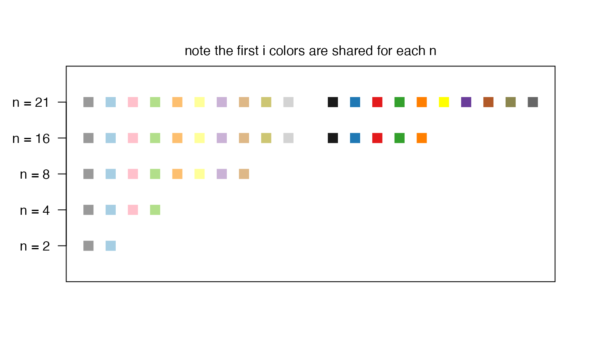

Used to map nominal data to colors. By default these colors are chosen so that the categories can be well differentiated visually (e.g. to highlight the different groups)
color_loon()
A function that takes a vector with values and maps them to a vector of 6 digit hexadecimal encoded color representation (strings). Note that loon uses internally 12 digit hexadecimal encoded color values. If all the values that get passed to the function are valid color names in Tcl then those colors get returned hexencoded. Otherwise, if there is one or more elements that is not a valid color name it uses the loons default color mapping algorithm.
This is the function that loon uses by default to map values to colors. Loon's mapping algorithm is as follows:
if all values already represent valid Tk colors (see
tkcolors) then those colors are taken
if the number of distinct values is less than the number of values in
loon's color mapping list then they get mapped according to the color list,
see l_setColorList and l_getColorList.
if there are more distinct values than there are colors in loon's color
mapping list then loon's own color mapping algorithm is used. See
loon_palette and the details section in the documentation of
l_setColorList.
For other mappings see the col_numeric and
col_factor functions from the scales package.
pal <- color_loon() pal(letters[1:4])#> [1] "#999999" "#A6CEE3" "#FFC0CB" "#B2DF8A"#> [1] "#999999" "#999999" "#A6CEE3" "#FFC0CB"#> [1] "#008000" "#FFFF00"# show color choices for different n's if (requireNamespace("grid", quietly = TRUE)) { grid::grid.newpage() grid::pushViewport(grid::plotViewport()) grid::grid.rect() n <- c(2,4,8,16, 21) # beyond this, colors are generated algorithmically # generating a warning grid::pushViewport(grid::dataViewport(xscale=c(0, max(n)+1), yscale=c(0, length(n)+1))) grid::grid.yaxis(at=c(1:length(n)), label=paste("n =", n)) for (i in rev(seq_along(n))) { cols <- pal(1:n[i]) grid::grid.points(x = 1:n[i], y = rep(i, n[i]), default.units = "native", pch=15, gp=grid::gpar(col=cols)) } grid::grid.text("note the first i colors are shared for each n", y = grid::unit(1,"npc") + grid::unit(1, "line")) }